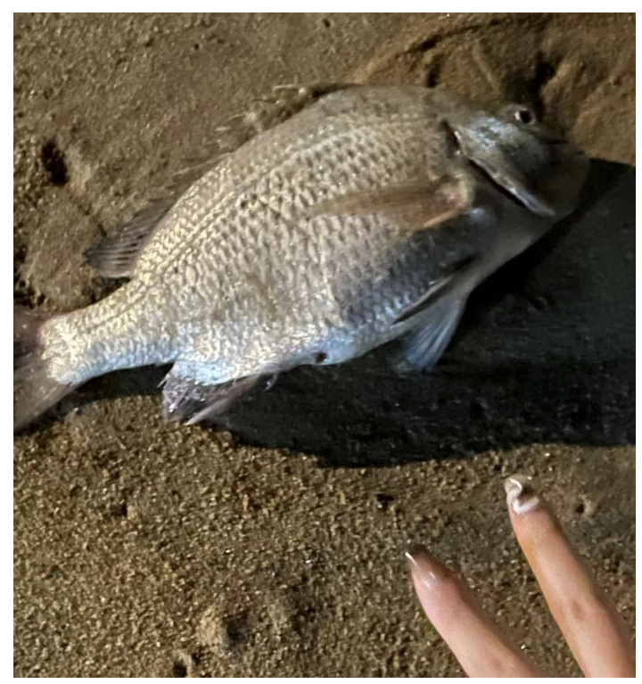
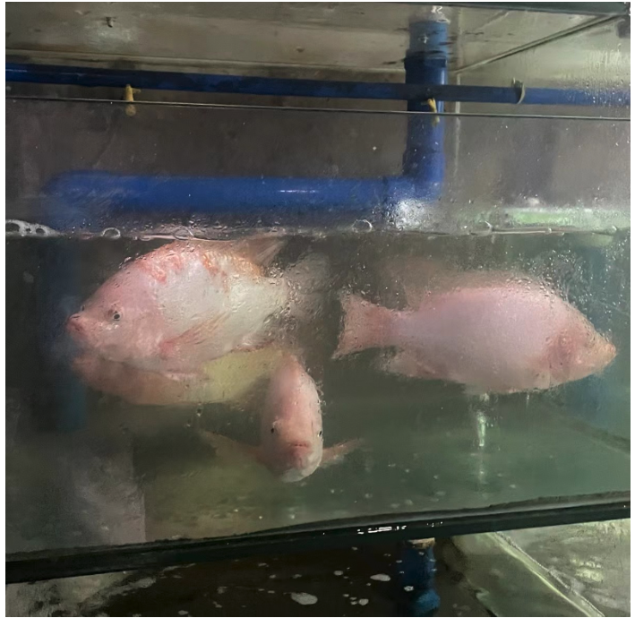

2024新年新气象，采编两则Cascad3成员共写里的「新人与SeeDAO」。
see SeeDAO 复杂的遇见
by 第五期新手村 Su
很久以来，我就想加入到Web3的社群中。但是，Web3是一个相对封闭的领域，如果身边没有一个朋友“领进门”，是很难找到入口的。我遇见SeeDAO的过程也颇为曲折。
首先，我在小红书上广泛搜索了各种Web3的关键词，看到了另一个DAO组织的帖子。我根据这个帖子，先加入了他们的小红书群，然后在小红书群里找到了负责人的微信，添加了负责人的微信之后。在和负责人聊天的时候，问他有没有其它推荐的DAO，他说SeeDAO不错。就这样，我才在网上搜到了SeeDAO，连接钱包、完成SBT，成为了成员。
正好，在我加入的时候，SeeDAO要举办新手营。于是，顺理成章地，我参加了新手营，挨个做项目，参加SeeDAO的会议。
现在回头来看，对于一个完全不了解Web3的、非技术背景的小白来说，想要加入Web3的社群，确实困难重重。首先，中文互联网平台关于web3的信息就很少。接下来，一个小白需要理解：钱包、DAO、SBT、Discord、Notion、Telegram、智能合约等等一系列全新的概念，而每个概念背后又有新的概念，仿佛一下子进入了词汇的迷宫，又好像迎面扑来词汇的大浪。但是如果没有被这些词汇吓到，那么接下来就可以逐渐自己探索web3的世界了。
和 SeeDAO的缘分
by XiYang的碎碎念
最早接触的概念是元宇宙，那段时间头号玩家刚上映很火，很喜欢玩沙盒游戏所以很感兴趣。同期我父亲是做互联网行业的，在饭桌上会和家里人谈起不少专业名词，高一的我听得云里雾里，私下便去b站搜关键词了解，从名词解释再到崔跃老师，接触到了登链社区以及捕鲸船等等。
不久后b站就精准推送了SeeDAO的宣发视频，出于好奇扫了二维码关注了公众号，偶尔刷到会看看。
还有印有老图标的那块蛋糕，当时我在室外洗笔手冻得通红，水溅到手机上误触弹出的就是SeeDAO生日推文，时隔一年在成都吃到太极星的蛋糕了....
SeeDAO老图标的蛋糕 照片: baiyu
2023年11月在成都吃到太极星的蛋糕了
23年举行新手村第一期时我正在集训备考阶段，SeeDAO的1234期新手营都刷到了，由于某个预言对SeeDAO更是充满了好奇，也加进去学习，却没有跟完整一期过。
再一次近距离接触就是今年的海南·博鳌。
那天刮着小台风，第一次线下见了SeeDAO小伙伴，文倩姐总是含着笑的。
由于场馆太闷几人坐在草坪上聊天，晗姐聊起自己对web3的愿景时，马路对面的路灯刚好被她的头挡住，光晕笼罩着她。
然后去了海边，和Ashley在岸上发现一条超大的鱼没有了呼吸，可爱的Ashley想用袋子装起来
晗姐让我们放生了。

吃饭时看见的，我想是他的兄弟姐妹吧，愿鱼星安好

印象深刻的是次日，商演的嘉宾不断展示自己的产品和动人的经历，晗姐上去讲了我们所处的时代，靠暴力机制来升级人类文明，会越来越危险。
晚上和博鳌的姐姐们也聊到了敏感话题，意识到其实有很多人在默默地发心向善去维系周遭的一切，而且是各行各业，不论年龄！
我回去逛了几天就办理休学回成都了，然后完整地参加了第五期新手训练营，设计了些小东西贡献城邦造物，逐渐参与到SeeDAO中，也认识了耕耘教育行业的定慧，来成都后结果双双辞职....
这时恰逢白读书店开张，去蹭了几次书看，赶上了开店座谈会和讲座，大家提议到玩狼人杀，白鱼说不喜欢这种。以及维纳文献的展览里，大家说想在SeeDAO办一所大学等等
维纳文献展 公众号：白读Bookstore
我喜欢的Web3是自由且流动的，不受强制拘束的，在城邦中大家来去自如，并不是社会关系或者利益捆绑在一起，于我而言这份松弛感是我们的共识。同时大家可以打破现实的壁垒聚集在数字城邦，用心去解决我们真正应该担忧的具体的问题，而不是人类轮回千万年仍深陷其中的幻象。
感谢SeeDAO让我学到了很多，祝愿SeeDAO坚定不移地走在自己道上。
文字｜Su & XiYang
整理：文倩
排版｜Bo
审核｜ T1NG
相关文章：
SeeDAO新手营体验 | 入行web3必不可少的体验，早卷早超生